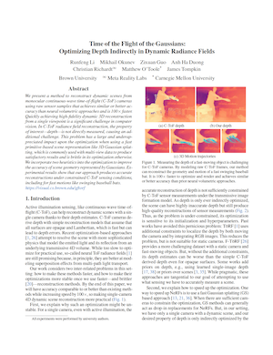
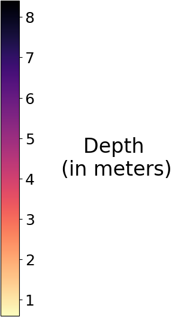

Time of the Flight of the Gaussians:
Optimizing Depth Indirectly in Dynamic Radiance Fields
CVPR 2025 (Oral Presentation)
Meet us at:
Oral Session 5C — Sun 15 Jun 9:30-9:45 a.m. CDT, Davidson Ballroom
Poster Session 5 — Sun 15 Jun 10:30 a.m.-12:30 p.m. CDT, ExHall D
Runfeng Li
|

|

|
|  |

|

|
|
|  | |
Abstract
We present a method to reconstruct dynamic scenes from monocular continuous-wave time-of-flight (C-ToF) cameras using raw sensor samples that achieves similar or better accuracy than neural volumetric approaches and is 100x faster. Quickly achieving high-fidelity dynamic 3D reconstruction from a single viewpoint is a significant challenge in computer vision. In C-ToF radiance field reconstruction, the property of interest—depth—is not directly measured, causing an additional challenge. This problem has a large and underappreciated impact upon the optimization when using a fast primitive-based scene representation like 3D Gaussian splatting, which is commonly used with multi-view data to produce satisfactory results and is brittle in its optimization otherwise. We incorporate two heuristics into the optimization to improve the accuracy of scene geometry represented by Gaussians. Experimental results show that our approach produces accurate reconstructions under constrained C-ToF sensing conditions, including for fast motions like swinging baseball bats.
Video
Results
BibTex
|